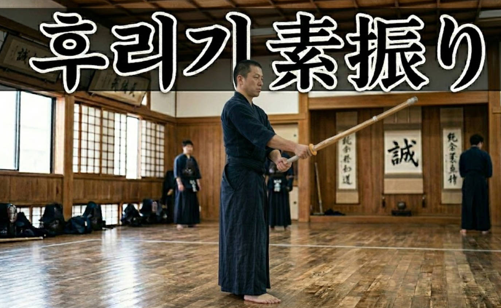

🌐 English version available — use the KO/EN button in the top right corner.

검도를 시작한 첫날부터 도장을 떠나는 마지막 날까지, 후리기(스부리, 素振り)는 항상 그 자리에 있다. 수련 시작 전 몸을 푸는 의식처럼 반복되는 이 동작은, 입문자 시절에는 팔이 떨어질 듯 힘겨운 훈련이지만 검도에 익숙해질수록 어느새 단순한 워밍업 이상의 의미를 갖지 않게 된다.
직장생활과 육아, 자기개발에 치이다 보면 도장 문턱이 점점 높아진다. 도장에 발걸음하지 못하고 속을 태우는 검도인이 필자만은 아닐 것이다. 도장에 가지 못하는 날에도 집에서, 회사 창고에서, 비어있는 회의실에서라도 검도 실력에 도움이 될 무언가를 찾다 보면 결국 가장 기초적인 질문으로 돌아오게 된다. 후리기, 이게 정말 도움이 되는 걸까.
후리기는 원래 그렇게 중요한 것이 아니었다
George McCall(kenshi247.net 운영자)은 전전(戰前) 검도 교범들을 연구한 결과 흥미로운 사실을 발견했다. 다카노 사부로(高野佐三郎)의 1930년 검도 교범, 오가와 긴노스케(小川金之助)의 1937년 교범 등 당시 대부분의 교본에서 스부리에 대한 언급이 거의 없다는 것이다. 당시 검도 교육의 중심은 혼자 하는 연습이 아니라 상대와 함께하는 파트너 연습이었다.
후리기가 검도 수련의 정식 일부로 자리잡은 것은 전후(戰後), 특히 1960년대 이후 아동 검도 붐과 학교 체육 교육의 영향으로 수련 방식이 체계화되면서부터다.
그렇다면 후리기는 의미가 없는가
그렇지 않다. 고단자 지도자들의 의견은 비교적 일관된다.
스에노 한시 8단(1979년 전일본 우승)은 세미나에서 이렇게 말했다. "스부리를 제대로 할 수 없다면, 검도 경력이 아무리 길어도 검도를 할 수 없다." 그는 죽도의 궤도가 몸의 중심선을 따라 부드럽게 움직여야 하며, 어깨·팔꿈치·손목 세 관절을 모두 사용해야 한다고 강조했다.
사카모토 타카시 7단은 "후리기 하나하나가 시합에 영향을 미친다. 단순한 워밍업이 아니라 소중한 수련 방법으로 대해야 한다"고 했으며, 후리기를 잘 하는 학생이 결국 강한 검도인이 된다고 말했다.
전일본검도연맹 이사이자 8단인 구리타 와이치로(栗田和一郎)는 이렇게 말했다. "도쿄 경시청 검도 특련 시절, 동계 훈련에서 하루 1,000번의 후리기를 했다. 정면후리기, 전후후리기, 좌우면후리기 등 종류별로 100~200번씩 나눠서 했다. 1,000번은 약 40분이 걸린다. 동호인들과 함께 할 때는 100번에서 200번으로 조금씩 늘리는 것을 권장한다. 후리기만으로 실력이 느는 건 아니지만, 올바르게 하면 분명히 배우는 것이 있다."
그는 코로나19로 파트너 연습이 불가능했던 기간에 후리기에 집중한 덕분에 연습 재개 후에도 실력 저하를 거의 느끼지 못했다고 덧붙였다.
후리기의 실질적 효과
전일본검도연맹의 공식 검도 지도 지침서는 후리기의 목적을 이렇게 명시한다. "죽도 조작과 올바른 칼날 궤도(하수지, 刃筋)를 익히고, 손아귀 힘의 사용법(테노우치, 手の内)을 배우며, 발 움직임을 활용한 타격의 기초를 익힌다."
수련 수준에 따라 후리기의 의미는 달라진다. 입문자에게는 죽도를 다루는 근육을 만드는 힘 훈련이다. 특히 왼손과 왼팔의 근력을 키우는 데 효과적이다. 어느 정도 수준에 오른 검도인에게는 음악가의 음계 연습과 같다. George McCall은 이렇게 표현했다. "죽도와 몸이 연결되어 있는 감각을 유지시켜 준다. 뭔가 틀어진 것이 있으면 도장보다 고요한 환경에서 발견하고 점검할 수 있다."
반면 그는 동시에 중요한 한계도 지적한다. "후리기만으로는 손아귀 힘의 사용법(테노우치)을 제대로 익힐 수 없다. 실제로 무언가를 타격하는 것이 훨씬 중요하다. 도장 시간이 제한되어 있다면 후리기보다 연속타격 왕복 수련(기리카에시, 切り返し)이나 타격 반복 훈련(우치코미, 打ち込み)이 훨씬 효과적이다."
집에서 할 수 있는 후리기 루틴
그렇다면 구체적으로 어떻게 하면 좋을까. 아래는 전문가들의 의견을 바탕으로 한 참고용 제안이다. 개인의 체력과 수련 수준에 따라 조절하는 것이 중요하다.
입문자
매일 15~20분을 목표로 한다. 정면후리기 30번, 전후후리기 30번, 좌우면후리기 20번 순서로 시작한다. 거울 앞에서 죽도의 궤도와 자세를 확인하는 것이 중요하다. 속도보다 정확성을 우선한다.
유단자 이상
정면후리기 100번을 기준으로 시작해 200번까지 점진적으로 늘린다. 구리타 8단의 말처럼 100번은 약 5분, 200번은 약 10분이면 된다. 체력 향상을 위해서는 빠른후리기(速素振り) 30번 5세트를 추가해볼 수 있다. 중량목검(스부리토, 素振り刀)으로 힘을 키우고, 가벼운 목검으로 칼날 궤도(하수지)를 교정하는 방식을 병행하면 효과적이다.
횟수보다 질이 중요하다. 모든 후리기는 유효타의 조건 — 올바른 타격 부위, 올바른 죽도 부위, 기합, 바른 자세, 잔심 — 을 의식하며 해야 한다. 통증이 느껴지면 즉시 멈춘다. 잘못된 폼으로 반복하는 것은 나쁜 습관을 강화할 뿐이다.
결론
일부 연구자들의 시각에 따르면, 후리기는 검도 역사에서 생각보다 최근에 자리잡은 수련법이라는 견해도 있다. 어느 쪽이든 한 가지는 분명하다. 만병통치약은 아니며, 도장에서의 파트너 연습을 대체할 수는 없다. 그러나 도장에 가지 못하는 날, 몸과 죽도의 연결을 유지하고 자신의 폼을 점검하는 용도로는 분명히 의미가 있다. 다카노 사부로의 말처럼, "케이코를 할 수 없을 때 달리기와 후리기를 하면 절대 약해지지 않는다."
참고 자료
- George McCall, Suburi: a brief discussion, kenshi247.net (2018)
https://kenshi247.net/blog/2018/08/16/suburi-a-brief-discussion/ - Kurita Waichiro (Hanshi 8th Dan), The Suburi of a First-class Kenshi, Kendo Jidai International (2024)
https://kendojidai.com/2024/01/29/the-suburi-of-a-first-class-kenshi/ - Sueno Sensei (Hanshi 8th Dan) seminar notes, kendoinfo.net (2012)
https://kendoinfo.wordpress.com/2012/07/02/the-importance-of-suburi/ - Sakamoto Takashi (7th Dan) seminar notes, Kendo Jidai International (2019)
https://kendojidai.com/2019/09/16/the-importance-of-kamae-and-suburi/ - How many suburi is enough?, kendo-guide.com
https://www.kendo-guide.com/how-many-suburi-is-enough.html